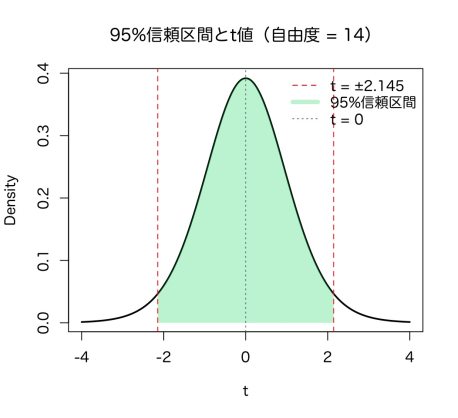
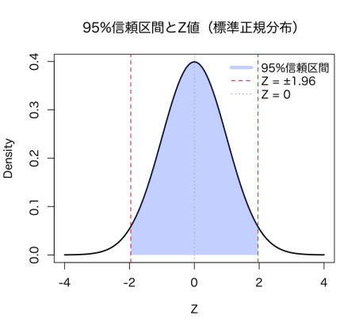
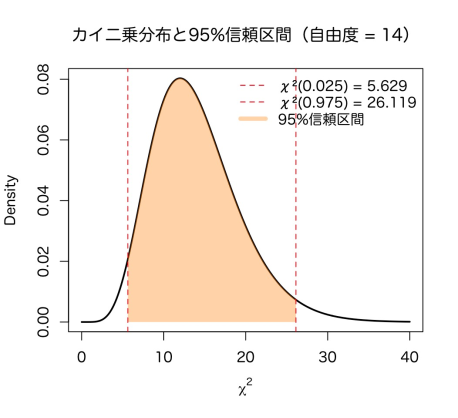

Chapter 7
推定（推定量の一致性・不偏性、区間推定、母平均・母比率・母分散の区間推定
【概要】
推定とは、標本データを用いて母集団の未知の特性（母数）を予測する統計手法である。推定には「点推定」と「区間推定」の二つがある。
点推定（Point Estimation）
母集団の未知のパラメータ（例：母平均、母分散など）を一つの値で推定する方法である。例えば、標本平均は母平均の点推定量である。
区間推定（Interval Estimation）
母数が一定の信頼度で含まれる範囲（信頼区間）を求める方法である。例えば95%信頼区間とは、同じ方法で推定を繰り返した際、95%の割合で母数を含むような区間を意味する。
推定量の評価基準：
不偏性（Unbiasedness）：推定量の期待値が母数に一致する。
一致性（Consistency）：標本サイズが増えると推定量が母数に近づく。
母平均の推定（母分散不明）
標本サイズ（\(n\)）、標本平均（\(\bar{x}\)）、標準偏差（\(s\)）を用いて、信頼度を(\(100-\alpha\))%とした場合の母平均（\(\mu\)）の信頼区間を推定する。
使用分布：\(t\)分布（自由度 \(n-1\)）
条件：正規性が仮定される or \(n\) が小さいとき
グラフ：\(t\ =\ \pm2.145\)（自由度14、95%）を示す両側信頼区間
母平均（\(\mu\)）の信頼区間を推定する数式：
\[ \bar{x} \pm t_{\alpha/2,\, n-1} \cdot \frac{s}{\sqrt{n}} \]母比率の推定
標本サイズ（\(n\)）と標本比率（\(p\)）を用いて、信頼度を(\(100-\alpha\))%とした場合の母比率（\(\pi\)）の信頼区間を推定する。
使用分布：標準正規分布（\(Z分布\)）
条件：\( n\hat{p} \geq 5 \) かつ \( n(1-p) \geq 5 \)を満たすとき近似可
グラフ：95%信頼区間を指定すると、中央に\(Z = 0\)、両側に \(Z\)値±1.96 を赤線で示す
母比率（\(\pi\)）の信頼区間を推定する数式：
\[ \hat{p} \pm z_{\alpha/2} \cdot \sqrt{ \dfrac{ \hat{p}(1 - \hat{p}) }{n} } \]母分散の推定
標本サイズ（\(n\)）と不偏分散（\(s^2\)）を用いて、信頼度を(\(100-\alpha\))%とした場合の母分散（\(\sigma^2\)）の信頼区間を推定する。
使用分布：カイ二乗分布（自由度 \(n-1\)）
条件：母集団が正規分布に従うと仮定
グラフ：カイ二乗分布において、自由度 \(n-1 = 14\) の時、95%信頼区間は以下のように表される
\[ \chi^2_{(0.025)} = 5.629, \ \chi^2_{(0.975)} = 26.119 \] 母分散（\(\sigma^2\)）の信頼区間を推定する数式：
\[ \left( \frac{(n - 1)s^2}{\chi^2_{1 - \alpha/2}},\ \frac{(n - 1)s^2}{\chi^2_{\alpha/2}} \right) \]【例題】
例題1: 母平均の区間推定（2019年6月）
池に生息する魚で目印の付いた魚の割合を推定したい。まず魚を200匹捕まえ、そのうち20匹が目印付きだった。このとき母比率 \(p\) の95%信頼区間を求めよ。
例題2: 母比率の区間推定（母分散既知）
日本人男性100人の身長を調べたら平均が172 cm、母分散はとする。このとき母平均 \(\mu\) の95%信頼区間を求めよ。
例題3: 母分散の区間推定
標本サイズが15のとき、標本分散が25だった。母分散の95%信頼区間を求めよ。（自由度14の\(\chi^2\) 分布： \(\chi^2_{(0.025)} = 5.629, \ \chi^2_{(0.975)} = 26.119\)
【例題の解説】
例題1:
- 標本比率を計算： \[ \hat{p} = \frac{20}{200} = 0.10 \]
- 二項分布を正規近似。標準誤差： \[ \sigma_{\hat{p}} = \sqrt{ \frac{ \hat{p}(1 - \hat{p}) }{n} } =\allowbreak \sqrt{ \frac{ 0.1 \times 0.9 }{200} } =\allowbreak 0.0212 \]
- 95%信頼区間の\(Z\) 値は1.96。
- 95%信頼区間： \[ 0.10 \pm 1.96 \times 0.0212 = [0.0585,\ 0.1415] \]
例題2: 母比率の区間推定
- 標本平均：\( \bar{x} = 172 \)
- 標準偏差：\( \sigma = 5.5 \)、標本数 \( n = 10 \)
- 標準誤差： \[ \sigma_{\bar{x}} = \frac{5.5}{\sqrt{100}} = 0.55 \]
- 95%信頼区間の\(Z\)値は1.96。
- 95%信頼区間： \[ 172 \pm 1.96 \times 0.55 =\allowbreak [170.92,\ 173.08] \]
例題3: 母分散の区間推定
- 標本サイズ \(n = 15\)
- 標本分散\( s^2 = 25 \)
- 自由度\( \mathrm{df} = 14 \)
- 信頼水準：95%
- \(\chi^2_{(0.025)} = 5.629, \allowbreak \ \chi^2_{(0.975)} = 26.119\)
- 母分散の区間推定式 \[ \left( \frac{(n - 1) s^2}{\chi^2_{0.975}},\ \frac{(n - 1) s^2}{\chi^2_{0.025}} \right) = \allowbreak \left( \frac{14 \times 25}{26.119},\ \frac{14 \times 25}{5.629} \right) = (13.39,\ 62.20) \]
【pythonでの解説】
例題1: 母平均の区間推定
コード（statsmodels使用）:
from statsmodels.stats.proportion import proportion_confint
# パラメータ
x = 20
n = 200
conf_int = proportion_confint(count=x, nobs=n, alpha=0.05, method='normal')
print(conf_int)
出力:
(0.058497..., 0.141502...)
例題2: 母比率の区間推定
コード:
import scipy.stats as stats
import numpy as np
mean = 172
sigma = 5.5
n = 100
se = sigma / np.sqrt(n)
z = 1.96
lower = mean - z * se
upper = mean + z * se
print((lower, upper))
例題3: 母分散の区間推定
コード:
from scipy.stats import chi2
n = 15
s2 = 25
df = n - 1
chi2_lower = chi2.ppf(0.025, df)
chi2_upper = chi2.ppf(0.975, df)
lower = (df * s2) / chi2_upper
upper = (df * s2) / chi2_lower
print(round(lower, 2), round(upper, 2))
出力:
13.39 62.20
【Rでの解説】
例題1: 母平均の区間推定
コード:
# パラメータ
x <- 20
n <- 200
p_hat <- x / n
se <- sqrt(p_hat * (1 - p_hat) / n)
z <- 1.96
lower <- p_hat - z * se
upper <- p_hat + z * se
cat(lower, upper)
出力:
[1] 0.0585 0.1415
例題2: 母比率の区間推定
コード:
mean <- 172
sigma <- 5.5
n <- 100
se <- sigma / sqrt(n)
z <- 1.96
lower <- mean - z * se
upper <- mean + z * se
c(lower, upper)
出力:
[1] 170.92 173.08
例題3: 母分散の区間推定
コード:
n <- 15
s2 <- 25
df <- n - 1
chi2_lower <- qchisq(0.025, df)
chi2_upper <- qchisq(0.975, df)
lower <- (df * s2) / chi2_upper
upper <- (df * s2) / chi2_lower
round(c(lower, upper), 2)
出力:
[1] 13.39 62.20